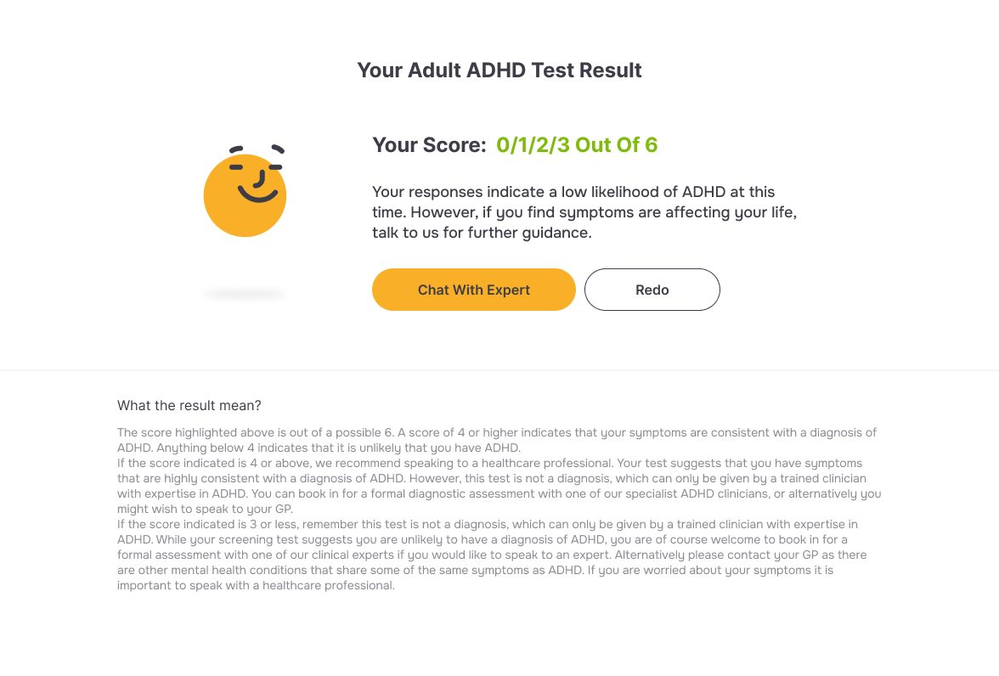

Remote ADHD assessment and treatment access, designed and built from 0–1 — professional support closer than you think.
Designed and built the Innovate ADHD digital platform from 0–1, improving access to ADHD assessment and support in the UK. The project focused on simplifying complex healthcare journeys and making information more accessible for neurodivergent users — combining clear information architecture with engaging, low-cognitive-load interactions to support users from awareness through to booking and care.

I led product design from 0 to 1 — user research, behavioural insight, interaction design and UI — while working closely with engineers on implementation, including AI-driven prototyping ("vibe coding"). Alongside product work, I also contributed to marketing and early growth, helping shape how the product was positioned and communicated.
People with ADHD often struggle to complete traditional assessments due to attention challenges, cognitive overload and long, text-heavy questionnaires — leading to high drop-off rates, incomplete or inaccurate self-assessments, and delayed access to diagnosis and care. The key question: how might we redesign essential clinical questionnaires so users can actually complete them?
I redesigned traditional ADHD assessments into a more gamified, interactive experience, breaking them into bite-sized modules that felt engaging and low-pressure while preserving clinical accuracy. This improved user engagement and significantly increased completion and conversion rates without compromising the validity of the assessment.
AI-driven build & delivery — an AI-driven workflow, using vibe coding alongside Figma prototypes to work closely with developers, moved us from concept to a live product in just two weeks.
AI-enabled validation — AI as a second layer of validation, testing usability and interaction clarity before reaching real users.
AI-assisted implementation — used Claude to directly refine and modify developer-written code, staying hands-on beyond design to ensure the final build matched the intended experience.
Larger, more readable typography, a clear guided structure, reduced unnecessary animation, and a strong visual hierarchy to help users stay on track — choices grounded in accessibility and cognitive principles, and validated through contrast and readability checks.
Based on early-stage analytics and platform performance, the product achieved 1.3K+ page views shortly after launch without marketing, reached 600+ unique users, and maintained an 82%+ engagement rate. Before I left, it had already reached and maintained an active user base, with improved completion and conversion compared to the original assessment flow.